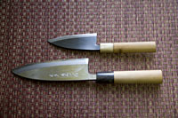
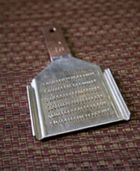
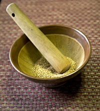

Techniques & Tools for the Japanese KitchenA well-equipped Western kitchen has almost everything you need for cooking Japanese food. If you find that you like cooking Japanese food regularly, these utensils will make all the difference. They save time, do a better job, and make your life easier. Knife techniquesThroughout the site, you'll find references to knife techniques that may be unfamiliar to you. It's very important to learn Japanese cutting techniques in order to get the right taste and texture. For instance, just as with Italian food, where the specific shapes of pasta are chosen to match various sauces, the shape of a vegetable is very important to the taste, visual enjoyment and texture of a Japanese recipe. Therefore, I've prepared a separate section for Japanese knife techniques. MORE GratingGrated daikon is one of life’s marvels. It has a bright, bitter and hot (but not spicy) flavor that lends a kick to grilled and broiled fish, fried tofu, soba dipping sauce, salad dressings, etc. An oroshigane (grater) will work better for this (as well as for ginger) than a Western one, because the resulting texture is fine, but not too fine. Some graters are specially made for certain types of vegetables, such as shark skin graters for fresh wasabi, which grind the hard root into a particularly fine paste. Traditional oroshigane are made of copper clad in tin, with sides that are turned up. Sharp tines are cut into the copper, which are also turned up. I purchased my treasured oroshigane at Aritsugu, where they embossed my name at the top, and will even reset and sharpen the tines when they get dull. I haven’t had to do this yet, because they are still sharp and they work perfectly. Less sharp, and common, are inexpensive aluminum graters. What is nice about these, other than the fact that they are widely available, is that they have a concave well at the bottom that conveniently catches the oroshi and juices. A traditional grater has no such well and must be grated on top of a plate or shallow bowl. Both types work very well and grate to a much finer consistency than Western graters. Be careful with your fingers when using a grater; it’s easy for your hand to slip and there’s no protection. GrindingMany recipes call for ground sesame seeds. While you can purchase ground sesame seeds in ready-made packages, the flavor and freshness is vastly superior when the seeds are freshly ground. What’s more, it is very easy when you have the right tools. The Japanese suribachi (mortar) is a ceramic bowl that is unglazed and scored with ridges. A surikogi (wooden pestle) is then used to grind the seeds (or nuts) to the desired consistency. The grooves make fast work of this process; no more than a few minutes. You can then add the other ingredients for the dressing or sauce directly in the bowl, as my mother does, or transfer the mixture into a separate bowl. There is also a brush specially made to brush the powder from the grooves of the surbachi, if you so desire. |
|



|